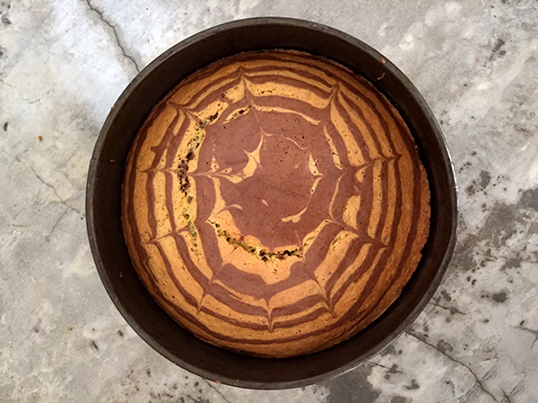

Ein Zebrakuchen! Einfach gemacht und sieht einfach toll aus.
Coca de la cebra! Simple en hacer y tiene una pinta estupenda.
A zebra cake! Simply made and looks great.


Ein Zebrakuchen! Einfach gemacht und sieht einfach toll aus.
Coca de la cebra! Simple en hacer y tiene una pinta estupenda.
A zebra cake! Simply made and looks great.

Käsespiesse mit halber Cherrytomate auf der Kresse Wiese. Cool fingerfood! Brochetas de queso con medio tomate cherry en el césped de berro. Cheese kebabs with half…
Weiterlesen →
Forme einen Draht in die gewünschte Buchstabenform und fädel anschliessend die einzelnen Teile einer oderer mehrer essbarer Ketten auf den Draht. Forme un alambre en la…
Weiterlesen →
Schäle die Süsskartoffel und schneide sie in dünne Scheiben, am besten mit einer Gurkenreibe. Dann kann man, wenn man möchte Plätzchformen ausstechen. Man pinselt ein bischen…
Weiterlesen →
Hannah und Noah wollten in der Küche alleine gelassen werden und das ist das Ergebnis. :-) Hannah y Noah querían estar solos en la cocina y…
Weiterlesen →
Eine Süße Fee mit ihrem süßen Zauberstab. Una dulce hada con su varita dulce. :-) A Sweet fairy with her sweet wand.
Weiterlesen →
Kleines Eis, mit allem, was wir zu Hause haben. Wäscheklammern, Zahnstocher, Gefrierschrank, Eiswürfel- Form und Saft! Helados pequeños, hecho con todo que tenemos en casa. Pinzas,…
Weiterlesen →